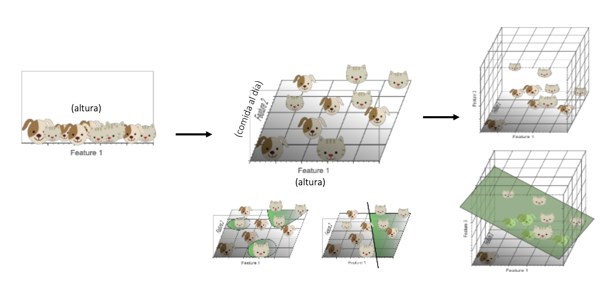
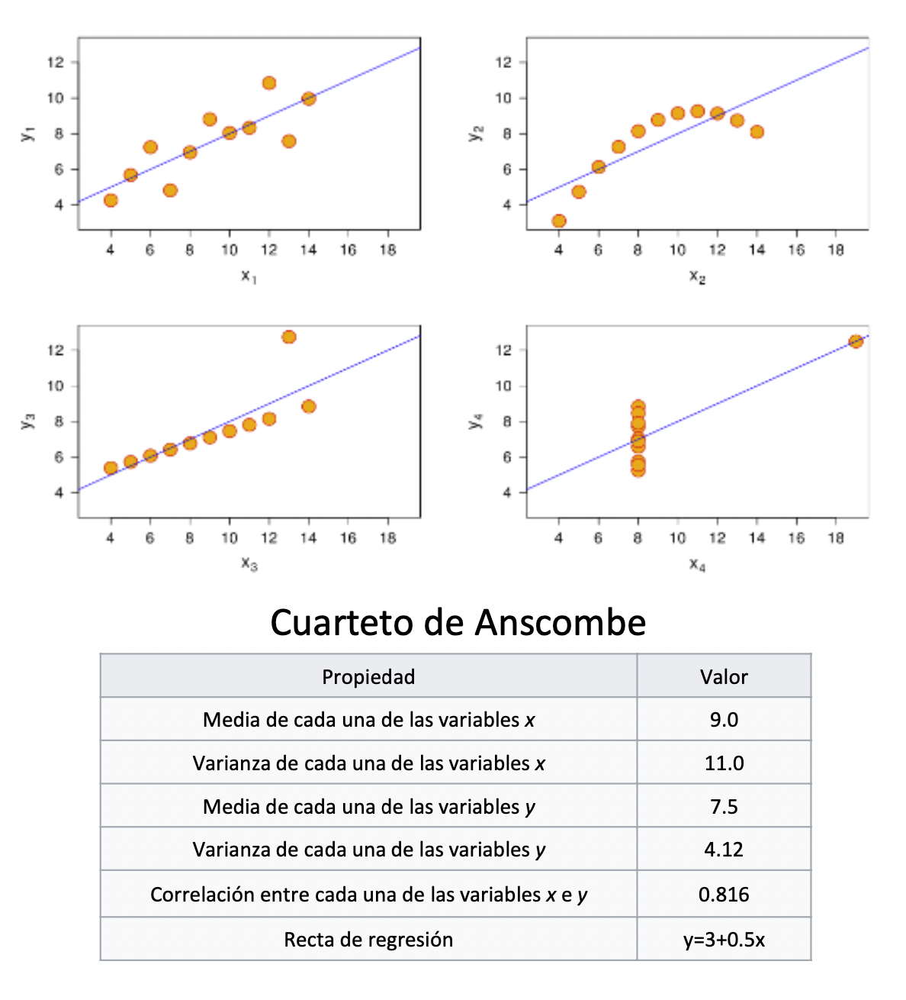
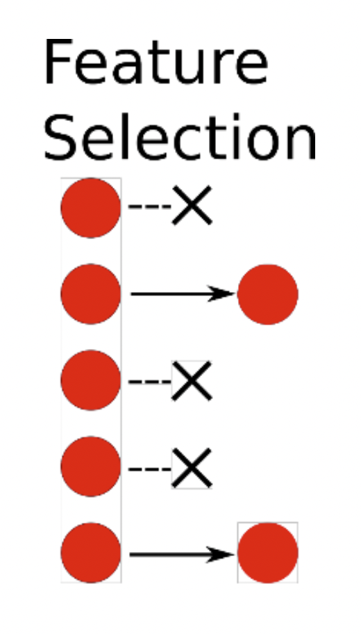
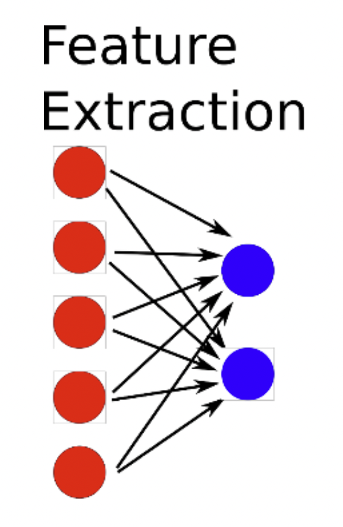
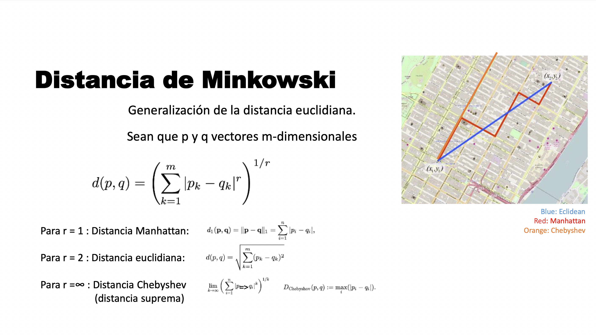
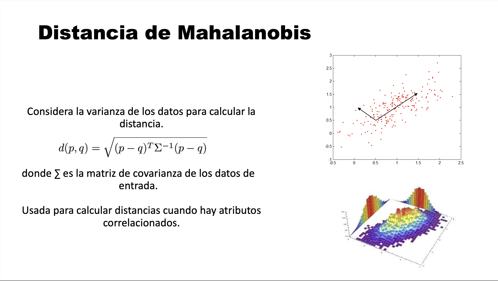
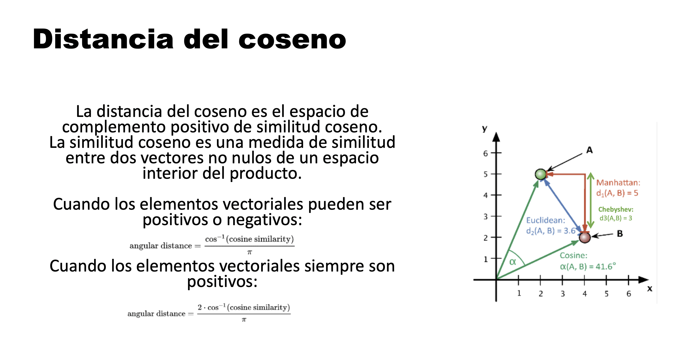
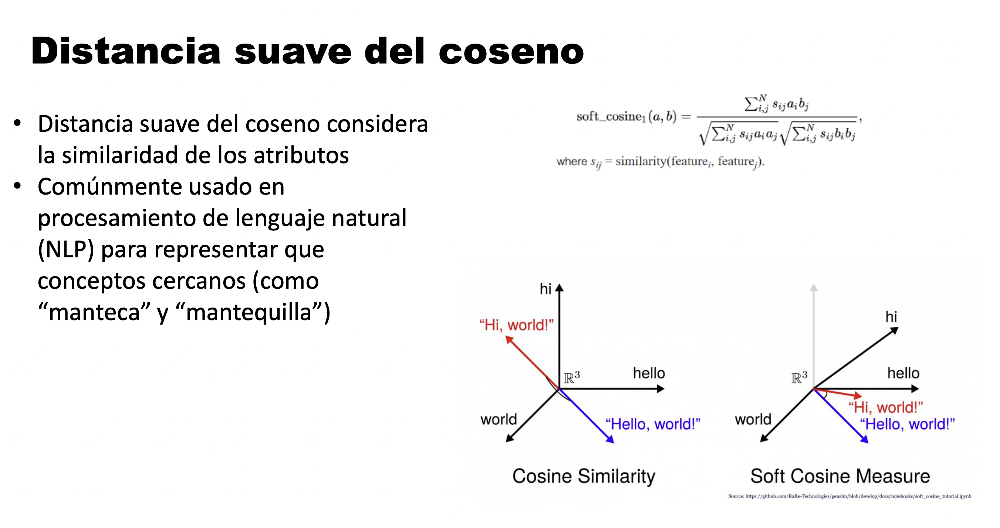
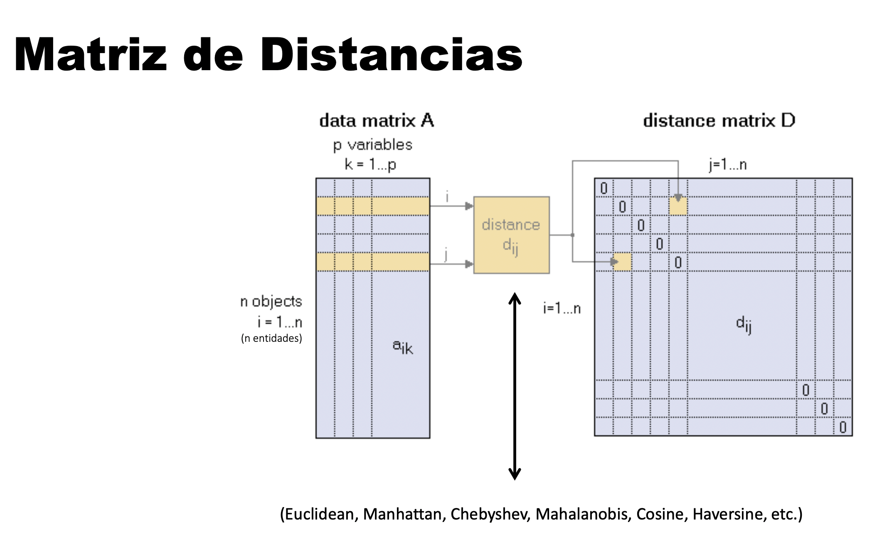
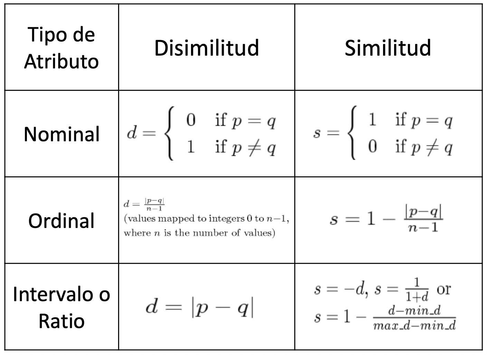

2 Feature Engineering
2.1 La maldición de la dimensionalidad
- Una cantidad correcta de atributos ayudan a crear mejores modelos.
- Los datos de altas dimensiones se vuelven cada vez más dispersos en su espacio.
- Las definiciones de densidad y distancia entre puntos se vuelven menos significativas a mayor numero de atributos.

2.2 Análisis exploratorio de datos (EDA)
Análisis del conjunto de datos para resumir sus principales características, mediante métodos estadísticos y visuales.
2.2.1 Objetivos EDA:
- Descubrir la estructura subyacente de los datos
- Identificar variables relevantes Detectar valores atípicos y anomalías Validar supuestos
- Generar hipótesis a partir de los datos

2.3 Definición de Ingeniería de Atributos
- Selección de atributos:
-
Selección de un subconjunto de atributos según algún criterio específico.

- Extracción de atributos:
-
Creación de nuevos atributos a partir de atributos originales

Pueden hacerse con conocimiento del dominio o algorítmicamente
2.4 Objetivos de Feature Engineering
Mejorar el desempeño de los modelos:
- Poder predictivo
- Complejidad
- Tiempo de ejecución
Visualizar los datos
Eliminar el ruido
2.5 Distancias
Una métrica que mide la distancia entre un par de entidades dados los dos puntos x e y, una función métrica o de distancia debe cumplir las siguientes condiciones:
| Nombre Condición | Condición |
|---|---|
| No negatividad | d(x,y) >0 |
| Identidad | d(x,y)=0 <=> x=y |
| Simetría | d(x,y)=d(y,x) |
| Desigualdad triangular | d(x,z) <= d(x,y)+d(y,z) |
2.5.1 Tipos de Distancias
2.5.1.1 Distancia Euclediana
Se desprende del teorema de Pitágoras

d_E(P_1, P_2)=\sqrt{(x_2-x_1)^2+(y_2-y_1)^2}
2.5.1.2 Distancia de Minkowski
Generalización de la distancia euclidiana. Sean que p y q vectores m-dimensionales

2.5.1.3 Distancia de Mahalanobis

2.5.1.4 Distancia del Coseno
 #### Distancia Suave del Coseno

2.5.2 Matriz de Distancias

2.6 Similitud
Similitud:
- Mide lo parecidos que son dos entidades.
- Es más alto cuando entidades son más parecidas.
Disimilitud
- Mide cuan diferentes son dos entidades
- Más bajo cuando los objetos son más parecidos
